LakeScope › AR
Bull Shoals Lake today
Updated 2026-11-14 - Atlas Labs
Clear water, 62°F water, level steady, 2 ft below normal, calm this morning.
Water level
652.47 ft
U.S. Army Corps of Engineers - 2026-11-14
7-day trend: steady (-0.01 ft). Compared with normal for this date: -1.9 ft (same weeks, 2016-2025).
Water clarity and algae
Clear water Last clear view: yesterday.
Surface temperature
62°F
seen from space on 2026-11-11

Ice
Open - 0% ice cover
Estimate from weather and satellite, not a measurement. Check the ice yourself before going on it.
Weather, next 3 days
| Day | Sky | High / low | Wind | Rain |
|---|---|---|---|---|
| Saturday | Widespread Frost then Mostly Sunny | 53 / 31°F | 5 mph E | 0% |
| Sunday | Mostly Sunny | 55 / 31°F | 5 mph E | 0% |
| Monday | Sunny | 59 / 31°F | - mph | 0% |
Sunrise 06:47 - sunset 17:02 - Waxing crescent. National Weather Service.
Get the LakeScope app: alerts and the 3-D view of Bull Shoals Lake